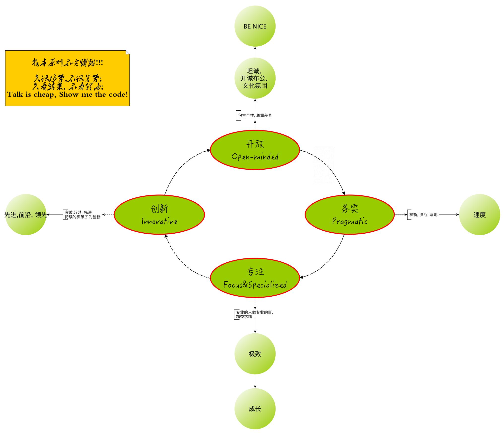

BiasedScala: Why I Chose Scala
王福强
I have been writing Scala code for many years, since sbt 0.11.x days.
I checked a project that I open sourced many years ago when I was working at Alibaba, it tells me that it was 11 years ago.
What time flies…
In fact, I had tried many programming languages, so choosing Scala as the main programming language brings a lot thoughts and practices.
Pragmatic
I set up a big picture for a team that I think I would like to build and work in many years ago:

One of the factor is Pragmatic, people who can get things done quickly and efficiently in a simple way always rock me.
When I chose Scala, Pragmatic is also an important factor. In those days, static program language with type omit and derivation helps a lot(we are lazy, right?). Semi-colons are annoying too. They are tiny things, but make me feel good, and don’t want turn back to Java.
Another beautiful thing is, I can feel scala is designed with consistent philosophy inside. Complexity at first sight, but Simpliciy inside.
So I settled.
Personal Taste
If miscellaneous programming languages are different dish, Scala tastes so good for me.
Althought I find it has only a small community, but I still love to stick with it, at least it is good enough for me.
When I write scala codes, usually I am buidling some products to meet some customers’ need, so scala as a programming lang is just a tool not my end, as long as it helps me get things done quickly and efficiently, I will keep sticking with it.
So I settled.
Adapt for flexibility
Scala is not perfect, So I adapted it a lot.
Scala has a great community and wonderful ecosystem, but I don’t connect and involve too much.
I use Scala as a better Java, that’s my main principle, I called Scaja.
So I don’t use ZIO, shapeless, blablabla… event SBT (I had tried maven, gradle, sbt many times, but settle on maven.)
Nothing blocks me to get jobs done, I only chose Simple and Easy to Understand tools. As long as remembering that it’s NOT the end but tools and means.
I have adapted scala a lot when using it in real scenarios, I am happy with it.
So I settled.
「为AI疯狂」星球上，扶墙老师正在和朋友们讨论有趣的AI话题，你要不要⼀起来呀？^-^
这里
- 不但有及时新鲜的AI资讯和深度探讨
- 还分享AI工具、产品方法和商业机会
- 更有体系化精品付费内容等着你，加入星球(https://t.zsxq.com/0dI3ZA0sL) 即可免费领取。(加入之后一定记得看置顶消息呀！)

存量的时代，省钱就是赚钱。
在增量的时代，省钱其实是亏钱。
避坑儿是省钱的一种形式，更是真正聪明人的选择！
弯路虽然也是路，但还是能少走就少走，背后都是高昂的试错成本。
订阅「福报」，少踩坑，少走弯路，多走一步，就是不一样的胜率！